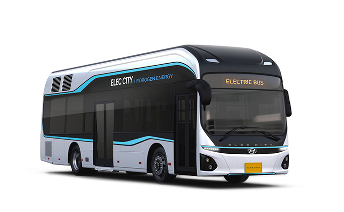

전기버스 배터리
미래상태 예측 시스템
battery_charging_full
배터리 현재 상태
bar_chart
미래 상태 예측
route
노선 분석
schedule
충전 스케줄링
manage_history
운행 일정 설정
settings
설정
people
회원관리
face
마이페이지
노선
선택
360
차량 번호
선택
12고3456
회차
선택
1회차
날짜
search

배터리 현재 상태
배터리 팩
차트용 소스:
과전류
drag_handle
정상 범위
전압
전류
SOC
V센서
팩용량
온도 1
온도 2
모듈 정보
차트용 소스:
#4. 성능 저하
모듈 1
모듈 2
모듈 3
모듈 4
모듈 5
모듈 6
모듈 7
모듈 8
모듈 9
모듈 10
모듈 11
모듈 12
모듈 13
모듈 14
모듈 15
모듈 16
모듈 1 - 14
모듈 15 - 16